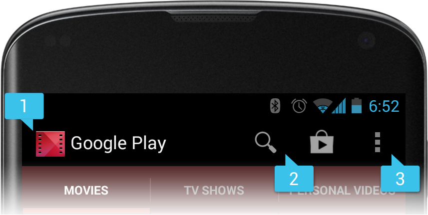

Android Multi Screen Apps
G|Days 2014, DR Congo
[Diapos]
Navigation : suivre les flèches dans le coin gauche.
Naviguez de droite à gauche et de haut en bas lorque les flèches verticales sont visibles.
Le problème !
Fabriquants
- Acer
- Asus
- HTC
- LG
- Motorola
- Samsung
- Sony
- ...
Fragmentation
Types de Terminaux
11.868 Différents types terminaux vus en 2013 !
Smartphones
Tablettes

Laptops
TV
Set-Top-Box
Consoles
Montres

Partout
Internet of Things (IoT)?
Behind the 'Internet of Things' Is Android and It's Everywhere
Taille & Résolution
2.8 in, 3.2 in, 3.5 in, 3.6 in, 3.7 in, 4.0 in, 4.3 in, 4.5 in, 4.7 in, 4.8 in, 5.0 in, 6.4 in, 7.0, 9.7 in, 10.1 in, ...
320x240 QVGA, 480x320 HVGA, 800x480 WVGA, 960x540 qHD, 1280x768 WXGA, 1280x720 HD, 1920x1080 HD, ...
API Versions
Orientation
Paysage ou Portrait?
Keep Calm
and
Trust Android Engineers
Supporter
Multiples tailles d'écrans
Plage des tailles Supportés
- sizes: small, normal, large, and xlarge
- densities: ldpi (low), mdpi (medium), hdpi (high), and xhdpi (extra high)
Classement des Tailles et Densités
Density-independent Pixel (dp)
Une unité virtuelle de mesure de pixels que vous devriez utiliser lors de la définition des layouts de votre UI, pour exprimer les tailles des layouts ou les positions de façon indépendante des densités.
Le density-independent pixel (dp) est équivalent àun pixel physique sur un écran de 160 dpi (medium density)
Conversion
px = dp * (dpi / 160)
Ex: Sur un écran à 240 dpi, 1 dp equal à 1.5 pixels physiques
L'indépendence à la Densité
Elle preserve la taille physique des éléments de l'interface lorsqu'ils sont affichés sur des écrans avec differente densites
- Le systeme rédimensionne les unités dp de façon appropriée pour la densité de l'écran courrent
- Le systeme redimensionne les resources "drawable" à la taille appropriée , basée sur la densité courrante, si nécessaire
Mauvais

Bon

Comment supporter multiples écrans?
Utiliser <supports-screen>
Explicitement declarer dans le Manifest quelles tailles d'écran votre application supporte
Fournir differents layouts pour differentes tailles d'ecrans
-
Fournir des resources spécifiques aux tailles: small, normal,
large, and xlarge
- Ex: layout-xlarge/
- Utiliser le sw<N>dp qualificateur de configuration pour
definir la largeur la plus petite disponible (depuis API 13)
- Ex: layout-sw600dp/ (uniquement 600dp screen width)
Fournir des bitmaps differentes
- Par défaut, Android rédimensione les drawables (.png, .jpg, .gif et .9.png files)
- Inclure des versions alternatives pour differentes resolutions pour différentes densités d'écran
-
Les resources spécifiques aux densités sont ldpi (low), mdpi
(medium), hdpi (high), and xhdpi (extra high)
- Ex: drawable-hdpi/
Configuration Qualifiers
Usage: <resources_name>-<qualifier>
- <resources_name> est le nom standard de resource (comme drawable ou layout)
- <qualifier> est une configuration qualifier (comme hdpi or xlarge)
Layouts & Drawables
Drawables Alternatifs
- Yous n'aurez qu'à fournir les resources spécifiques à chaque densité(.png, .jpg, .gif or .9.png)
-
Suivant les taux 3:4:6:8 d'expension entre les 4 densités de base
- 36x36 pour low-density
- 48x48 pour medium-density
- 72x72 pour high-density
- 96x96 pour extra high-density
- Voir Icon Design Guideline
Tailles Relatives
Layouts des Tablettes pour Android 3.2
Android 3.2 a introduit une nouvelle façon de spécifier les resources pour davantage de tailles discrètes d'écrans
Nouveaux Qualificateurs de tailles
-
smallestWidth: sw<N>dp
- Ex: sw600dp
- Largeur disponible d'écran: w<N>dp
- Ex: w1024dp
- Hauteur disponible d'écran: h<N>dp
- Ex: h720dp
Examples de Configuration
Bonnes Pratiques
1. Utiliser wrap_content, match_parent, ou l'unité dp pour la dimension des layouts
Utiliser wrap_content, match_parent ou dp guaranti que que la taille appropiée est fournie à la view sur l'écran courant
PS: Utiliser sp pour les tailles des fontes
2. Ne pas utiliser des valeurs en pixels codés en dur dans le code de votre application
3. Utiliser RelativeLayout
Il utilise le positiotionement relatif pour placer ses vues filles
Par ex, vous pouvez spécifier que qu'un Button doit se trouver "à la droite d'un" TexteView
4. Utiliser des resources spécifiques à la taille et à la densité
PS: Pour éviter le pre-redimensionement, placer la resource dans un dossier de resources avec le qualificateur de configuration nodpi
5. Utiliser les Nine-patch Bitmaps
Ils sont généralement formattés comme des fichier PNG qui peuvent indiquer quels zones peuvent ou pas être étirées

Tablettes
&
Smartphones
Lignes directrices
1. Construire les design des vos Activities basé sur les Fragments
Fragment
- Introduit depuis Android 3.0 (API Level 11)
- Il permet de séparé les composants distincts de votre UI en parties distintes
- Permet un développement modulaire des UI
- PS: Utiliser Android Support Libraries pour utiliser les fragments dans les versions antérieures d'Android
Multiple Fragments, Multiple Activities
Smartphones
res/layout/main.xml
Tablettes
res/layout-large/main.xml
PS: Utiliser le qualificateur de taille minimum width pour mieux contrôler la taille de l'écran
Comment ça marche?
- Si le Fragment B est dans le layout, l'Activity A notifie le Fragment B de se mettre à jour
- Si le Fragment B n'est pas dans le layout, l'Activity A demarre l'Activity B (qui contient le Fragment B)
- Note Importante: Definir une interface de callback dans chaque classe de fragment pour communiquer avec l'activity hôte
2. Utiliser le Action Bar
Le Action bar permet d'identifier a position de l'utilisateur, et fournit des actions en plus des navigation modes
Introduit dans Android 3.0 (API Level 11). Toutefois, vous ne pouvez pas l'utiliser en usant de Android Support Libraries
Pourquoi Action Bar?
Le System Android fait fait tout le travail pour gracieusement adapter le action bar pour differentes tailles d'écrans
Astuces pour créer un Action Bar
1. Eviter d'utiliser la valeur always
- En forçant les items à toujours être visible, vous encombrez votre
- Les actions items risquent de cacher le titre ou d'autres items de navigation
- Utiliser ifRoom pour l'attribut android:showAsAction
2. Fournir une Icone
- Toujours fournir une icone pour les actions items
- Utiliser showAsAction="ifRoom|withText"
3. Fournir un Titre
- Toujours fournir un titre
- Les utilisateurs verront le titre comme un tooltip au long click
- C'est critique pour l' accessibilité:Les lecteurs d'écrans lisent à haute voix le titre du menu même quand il est invisible.
4. Eviter d'utiliser des navigation mode customisés quand c'est possible
- Utiliser les tab et drop-down navigation modes prédéfinis
- Le système va adapter leurs presentation selon la taille de l'écran automatiquement
- Ex: Stacked action bar sur les phones
Split Action Bar
- Disponible dans Android 4.0 (API level 14) et supérieur
- Ajouter uiOptions="splitActionBarWhenNarrow" à votre <activity> ou au manifest <application>
- Appeler setDisplayShowHomeEnabled(false) pour desactiver l'icone de l'application dans l'action bar
Comment Tester
Utiliser plusieurs configs de l'Emulator
emulator -avd <avd_name> -scale 96dpi
Android Studio
Previews prédéfinis (paysage and portrait modes)
Compatibilité
La caractéristique la plus importante d'un terminal compatible est la possibilité d'installer et correctement exécuter un fichier .apk
Apps Availability
<uses-feature> dans le fichier manifest
<uses-feature android:name="android.hardware.bluetooth" />
<uses-feature android:name="android.hardware.camera" />
Les autres filtres for la disponibilté des applications dans Google Play:
- <supports-gl-texture>
- <uses-configuration>
- <uses-library>
- <uses-permission>
- <uses-sdk>
Package Manager
Vérifier la disponibilté d'une fonctionnalité à l'exécution
PackageManager packageManager = this.getPackageManager();
if (packageManager.hasSystemFeature(PackageManager.FEATURE_NFC)) {
Log.d(TAG, "Oh yeah, NFC is available. :)");
} else {
Log.d(TAG, "Shit, no NFC. :(");
}
Business Reasons
- Lister les pays dans lesquels l'app est disponible
- Selectionner depuis quel opérateur les utilisateurs peuvent accéder à l'app